The one-minute answerAng sagot sa isang minutoAng tubag sa usa ka minutoIng sagot king metung a minutu
Hemodiafiltration (HDF) is a form of hemodialysis that adds a second way of cleaning the blood, so it removes more of the larger waste molecules. In the largest trial, adults who received high-volume HDF were less likely to die over about two and a half years than adults who stayed on standard high-flux hemodialysis (HD). That trial enrolled people whose teams expected them to receive a large HDF volume at almost every session. So HDF is a strong option when your unit can deliver it well, safely, and consistently, and when you want it. Good high-flux HD is still proper treatment if HDF is unavailable, unaffordable, or cannot be given reliably to you.Ang hemodiafiltration (HDF) ay isang uri ng hemodialysis na nagdadagdag ng ikalawang paraan ng paglilinis ng dugo, kaya mas maraming malalaking dumi ang natatanggal. Sa pinakamalaking pag-aaral, ang mga nasa hustong gulang na tumanggap ng high-volume HDF ay mas kaunti ang namatay sa loob ng mga dalawa at kalahating taon kumpara sa mga nanatili sa karaniwang high-flux hemodialysis (HD). Ang mga isinama sa pag-aaral ay mga taong inaasahan ng kanilang team na makakatanggap ng malaking volume ng HDF halos bawat session. Kaya malakas na opsyon ang HDF kapag kaya ng iyong unit na ibigay ito nang maayos, ligtas, at tuloy-tuloy, at kapag gusto mo ito. Tamang gamutan pa rin ang maayos na high-flux HD kung walang HDF, hindi kaya ang gastos, o hindi ito maibibigay nang maaasahan sa iyo.Ang hemodiafiltration (HDF) usa ka matang sa hemodialysis nga nagdugang og ikaduhang paagi sa paglimpyo sa dugo, busa mas daghang dagkong hugaw ang makuha. Sa kinadak-ang pagtuon, ang mga hamtong nga nakadawat og high-volume HDF mas gamay ang namatay sulod sa mga duha ug tunga ka tuig kaysa sa mga nagpabilin sa naandang high-flux hemodialysis (HD). Ang gilakip sa pagtuon mao ang mga tawo nga gilauman sa ilang team nga makadawat og dakong volume sa HDF halos matag session. Busa lig-on nga kapilian ang HDF kung kaya sa imong unit nga ihatag kini nga maayo, luwas, ug padayon, ug kung gusto nimo kini. Husto gihapon nga pagtambal ang maayong high-flux HD kung walay HDF, dili kaya ang gasto, o dili kini mahatag kanimo nga kasaligan.Ing hemodiafiltration (HDF) metung yang klasi ning hemodialysis a mamandagdag ikaduang paralan ning pamaglinis king daya, anya mas dakal a maragul a dumi ing maalis. King pekamaragul a pag-aral, ding matua a tinggap high-volume HDF mas kakaunti ing mete king lub ning adwang taun at kalahati nung ikumpara karing menatili king karaniwan a high-flux hemodialysis (HD). Ding tau king pag-aral, ila reng aasahan ning team da a makatanggap maragul a volume ning HDF malapit balang session. Anya matibe yang opsyon ing HDF nung kaya ning unit mu ing ibie ya mayap, ligtas, at tuloy-tuloy, at nung buri mu ya. Tamang panulu ya pa murin ing mayap a high-flux HD nung ala yang HDF, e kaya ing gastus, o e ya maibie keka a maasahan.
Is HDF the new standard?Ang HDF na ba ang bagong pamantayan?Ang HDF na ba ang bag-ong sukaranan?Ing HDF na ya ing bayung pamantayan?
For adults on dialysis three times a week in a dialysis center, many kidney experts now treat high-volume HDF as a reasonable preferred option when it can be done well. It is not yet a must-have for everyone. Here is the main result in plain numbers.Para sa mga nasa hustong gulang na nagda-dialysis tatlong beses isang linggo sa dialysis center, maraming eksperto sa bato ang itinuturing na ngayon ang high-volume HDF bilang makatwirang mas pinipiling opsyon kapag maayos itong magagawa. Hindi pa ito kailangang-kailangan ng lahat. Narito ang pangunahing resulta sa simpleng numero.Alang sa mga hamtong nga nagpa-dialysis tulo ka beses sa usa ka semana sa dialysis center, daghang eksperto sa kidney karon ang nag-isip sa high-volume HDF isip makatarunganong mas gipili nga kapilian kung mahimo kini nga maayo. Dili pa kini kinahanglanon sa tanan. Ania ang nag-unang resulta sa yanong numero.Para karing matua a mag-dialysis makatlu king metung a dominggu king dialysis center, dakal a eksperto king batu ngeni ing ituturing da ing high-volume HDF bilang makatwiran a mas pipiliang opsyon nung agawa yang mayap. E pa ya kailangan ning sablang tau. Oyni ing pekamaulagang resulta king simpling numeru.
CONVINCE trial, 1,360 adults, typical follow-up about 2½ years: 118 of 683 people assigned to high-volume HDF died, compared with 148 of 677 assigned to high-flux HD. Filled dots = deaths. That is about 5 fewer deaths for every 100 people over the trial. Everyone enrolled had been judged able to receive at least 23 liters of convection per session.CONVINCE trial, 1,360 nasa hustong gulang, karaniwang follow-up mga 2½ taon: 118 sa 683 na napunta sa high-volume HDF ang namatay, kumpara sa 148 sa 677 na napunta sa high-flux HD. Punong tuldok = namatay. Mga 5 mas kaunting namatay sa bawat 100 tao sa loob ng pag-aaral. Lahat ng isinama ay tinasang kayang tumanggap ng hindi bababa sa 23 litro ng convection bawat session.CONVINCE trial, 1,360 ka hamtong, kasagarang follow-up mga 2½ ka tuig: 118 sa 683 nga gibutang sa high-volume HDF ang namatay, kumpara sa 148 sa 677 nga gibutang sa high-flux HD. Puno nga tuldok = namatay. Mga 5 ka mas gamay nga namatay sa matag 100 ka tawo sulod sa pagtuon. Ang tanan nga gilakip gitimbang-timbang nga makadawat og dili moubos sa 23 ka litro nga convection matag session.CONVINCE trial, 1,360 a matua, karaniwang follow-up malapit 2½ a taun: 118 king 683 a mibie king high-volume HDF ing mete, kumpara king 148 king 677 a mibie king high-flux HD. Punung tuldok = mete. Malapit 5 a kulang a mete king balang 100 a tau king lub ning pag-aral. Ding sablang mipasok, tinasa dang kaya dang tumanggap e kukulang 23 a litru a convection balang session.
What these numbers do and do not sayAng sinasabi at hindi sinasabi ng mga numerong itoAng gisulti ug wala gisulti niining mga numeroIng sasabyan at e sasabyan dareng numerung reni
They come from people who were already stable on dialysis for at least three months and who could reach a high HDF volume. They do not tell us what happens in people whose access or blood pressure keeps the volume low, in people dialyzing twice a week, or in children. The study also did not show fewer hospital stays.Galing ang mga ito sa mga taong stable na sa dialysis nang hindi bababa sa tatlong buwan at kayang umabot sa mataas na volume ng HDF. Hindi nito sinasabi kung ano ang mangyayari sa mga taong ang access o presyon ng dugo ay nagpapababa ng volume, sa mga nagda-dialysis dalawang beses isang linggo, o sa mga bata. Hindi rin ipinakita ng pag-aaral na mas kaunti ang pagka-ospital.Gikan kini sa mga tawo nga stable na sa dialysis sulod sa dili moubos sa tulo ka bulan ug makaabot sa taas nga volume sa HDF. Dili kini mosulti kung unsay mahitabo sa mga tawo nga ang access o presyon sa dugo nagpaubos sa volume, sa mga nagpa-dialysis kaduha sa usa ka semana, o sa mga bata. Wala usab gipakita sa pagtuon nga mas gamay ang pagka-ospital.Ibat la reni karing tau a stable na king dialysis e kukulang atlung bulan at kaya dang abutan ing mataas a volume ning HDF. E na sasabyan nung nanu ing malyari karing tau a ing access o presyun ning daya ra mamababa king volume, karing mag-dialysis makadwa king metung a dominggu, o karing anak. E ne murin pepakit ning pag-aral a mas kakaunti ing pamag-ospital.
Two ways to pull waste across the filterDalawang paraan ng paghila ng dumi sa filterDuha ka paagi sa pagbira sa hugaw sa filterAdwang paralan ning pamanyampid dumi king filter
Your dialyzer is a bundle of thousands of tiny hollow fibers with microscopic pores. Standard HD cleans mainly by diffusion: waste drifts from your blood, where it is crowded, into the clean dialysis fluid, where there is none, much like tea spreading out of a tea bag. Diffusion works very well for small molecules such as urea and potassium, but it is slow for bigger ones.Ang dialyzer mo ay bungkos ng libu-libong maliliit na hollow fiber na may napakaliit na butas. Ang karaniwang HD ay naglilinis pangunahin sa pamamagitan ng diffusion: lumilipat ang dumi mula sa dugo mo, kung saan siksik ito, papunta sa malinis na dialysis fluid, kung saan wala nito, parang tsaang kumakalat mula sa tea bag. Mahusay ang diffusion para sa maliliit na molecule tulad ng urea at potassium, pero mabagal para sa malalaki.Ang imong dialyzer usa ka pungpong sa liboan ka gagmay nga hollow fiber nga adunay gagmay kaayong lungag. Ang naandang HD naglimpyo kasagaran pinaagi sa diffusion: mobalhin ang hugaw gikan sa imong dugo, diin daghan kini, ngadto sa limpyo nga dialysis fluid, diin wala kini, sama sa tsa nga mokaylap gikan sa tea bag. Maayo kaayo ang diffusion alang sa gagmay nga molecule sama sa urea ug potassium, apan hinay alang sa dagko.Ing dialyzer mu bungkus ya ning libu-libung malating hollow fiber a atin malating butas. Ing karaniwan a HD manlinis ya pekamarimla king diffusion: lalako ing dumi ibat king daya mu, nung nu masikip ya, papunta king malinis a dialysis fluid, nung nu ala ya, antimo ing tsa a kakalat ibat king tea bag. Mayap ing diffusion para karing malating molecule antimo ing urea at potassium, oneng malambat ya para karing maragul.
HDF adds convection. The machine pushes a large volume of water from your blood through the fiber walls, and that moving water drags along larger "middle molecules" that diffusion barely touches, the way a river carries sand that would never drift on its own. Because much more water leaves your blood than you need to lose, the machine replaces most of it with sterile, ultra-clean fluid that it makes from the purified dialysis fluid during the session (the "online" part of online HDF).Nagdadagdag ang HDF ng convection. Itinutulak ng makina ang maraming tubig mula sa dugo mo palabas sa dingding ng fiber, at hinihila ng gumagalaw na tubig na ito ang mas malalaking "middle molecule" na halos hindi naaabot ng diffusion, gaya ng ilog na nagdadala ng buhangin na hindi naman kusang lilipat. Dahil mas maraming tubig ang lumalabas sa dugo mo kaysa sa kailangan mong mabawas, pinapalitan ito ng makina ng sterile at napakalinis na fluid na ginagawa nito mula sa purified dialysis fluid habang nagse-session (ito ang "online" sa online HDF).Nagdugang ang HDF og convection. Ituklod sa makina ang daghang tubig gikan sa imong dugo pagawas sa bungbong sa fiber, ug kining naglihok nga tubig magbitad sa mas dagkong "middle molecule" nga halos dili maabot sa diffusion, sama sa suba nga nagdala og balas nga dili man mobalhin sa iyang kaugalingon. Tungod kay mas daghang tubig ang mogawas sa imong dugo kaysa sa kinahanglan nimong makuha, ilisan kini sa makina og sterile ug limpyo kaayo nga fluid nga himoon niini gikan sa purified dialysis fluid samtang nagsession (kini ang "online" sa online HDF).Mamandagdag ing HDF convection. Itulak ning makina ing dakal a danum ibat king daya mu palwal king pader ning fiber, at ing danum a ini a kikilus manyampid ya karing mas maragul a "middle molecule" a e masyadung abutan ning diffusion, antimo ing ilug a magdala balas a e kusang lalako. Uling mas dakal a danum ing lalwal king daya mu kesa king kailangan mung mabawas, salilinan ne ning makina ning sterile at malinis a malinis a fluid a gagawan na ibat king purified dialysis fluid kabang session (iti ing "online" king online HDF).
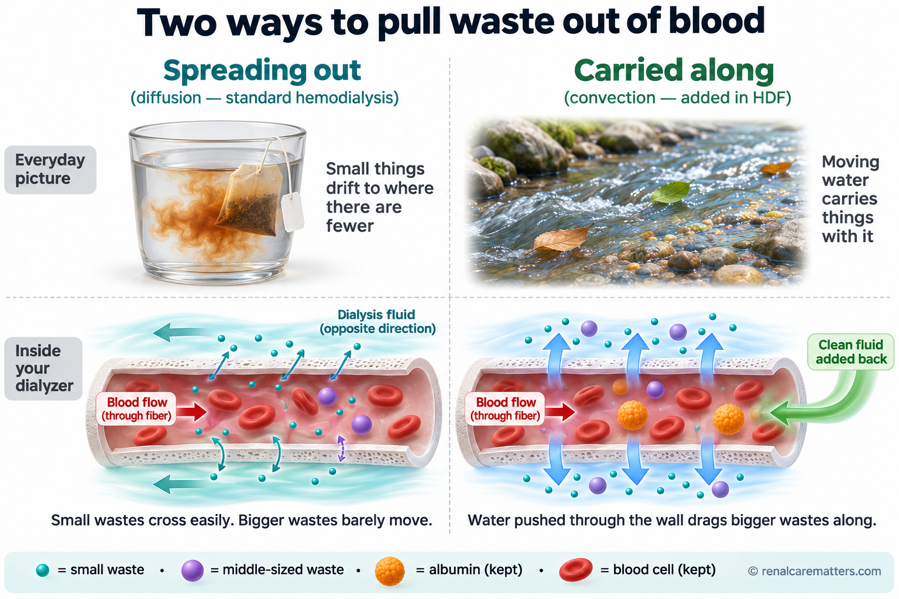
Diffusion (left) moves small molecules down a concentration difference. Convection (right) moves water across the membrane under pressure, and the water carries larger middle molecules with it. HDF uses both at once.
- HD
- Hemodialysis
- HDF
- Hemodiafiltration
- β2M
- β2-microglobulin, a marker middle molecule
What "23 liters" means: a worked exampleAng ibig sabihin ng "23 litro": halimbawaAng buot ipasabot sa "23 ka litro": pananglitanIng kayulugan ning "23 a litru": alimbawa
- Replacement (substitution) fluid given back during the session: 21 LReplacement (substitution) fluid na ibinalik habang session: 21 LReplacement (substitution) fluid nga gibalik samtang session: 21 LReplacement (substitution) fluid a pibalik kabang session: 21 L
- Extra fluid you actually need to lose (net ultrafiltration): 2 LSobrang tubig na talagang kailangan mong mabawas (net ultrafiltration): 2 LSobrang tubig nga kinahanglan gyud nimong makuha (net ultrafiltration): 2 LSobrang danum a talagang kailangan mung mabawas (net ultrafiltration): 2 L
- Total water that crossed the filter (convection volume): 21 + 2 = 23 LKabuuang tubig na tumawid sa filter (convection volume): 21 + 2 = 23 LKinatibuk-ang tubig nga mitabok sa filter (convection volume): 21 + 2 = 23 LKabuuan a danum a limipat king filter (convection volume): 21 + 2 = 23 L
You still lose only the 2 L you came in with. The other 21 L were washed through and given back clean. Raising the fluid you lose is never a way to "reach 23."Ang 2 L lang na dala mo ang talagang mababawas sa iyo. Ang ibang 21 L ay dumaan lang at ibinalik nang malinis. Hindi kailanman paraan ang pagdagdag ng tubig na tinatanggal sa iyo para "umabot sa 23."Ang 2 L ra nga imong gidala ang tinuod nga makuha kanimo. Ang laing 21 L miagi lang ug gibalik nga limpyo. Dili gayud paagi ang pagdugang sa tubig nga kuhaon kanimo aron "makaabot sa 23."Ing 2 L mu pamu a dala mu ing talagang mabawas keka. Ing aliwang 21 L miliban mu at pibalik a malinis. E ya kailanman paralan ing pamandagdag ning danum a alisan keka ban "abutan ing 23."
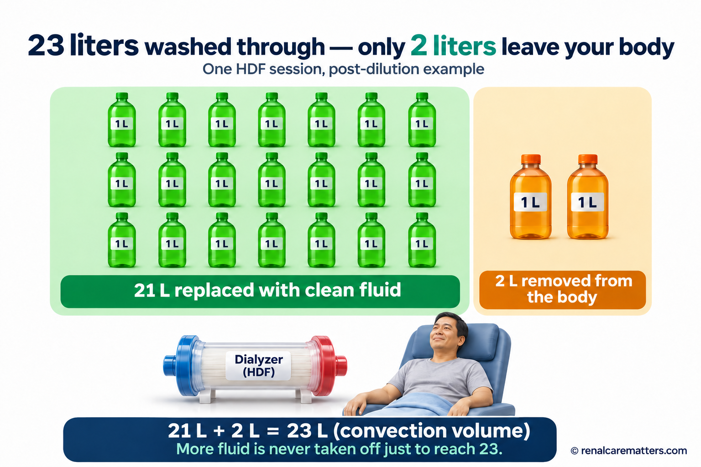
In this example, 23 liters of water pass through the filter in one session, but 21 liters are replaced with clean fluid and returned. Only the 2 liters of extra body water are actually removed.Sa halimbawang ito, 23 litro ng tubig ang dumadaan sa filter sa isang session, pero 21 litro ang pinapalitan ng malinis na fluid at ibinabalik. Ang 2 litro lang na sobrang tubig sa katawan ang talagang tinatanggal.Niini nga pananglitan, 23 ka litro nga tubig ang moagi sa filter sa usa ka session, apan 21 ka litro ang ilisan og limpyo nga fluid ug ibalik. Ang 2 ka litro ra nga sobrang tubig sa lawas ang tinuod nga kuhaon.King alimbawang iti, 23 a litru a danum ing miliban king filter king metung a session, oneng 21 a litru ing salilinan malinis a fluid at ibalik. Ing 2 a litru mu a sobrang danum king katawan ing talagang alisan.
- HDF
- Hemodiafiltration
There are two set-ups. In post-dilution HDF, the clean fluid is added after the blood leaves the filter; this is the mode tested in the survival trials. In pre-dilution HDF, the fluid is added before the filter, which dilutes the blood first, so its liters are not equal to post-dilution liters and cannot be compared with the 23 L benchmark.May dalawang ayos. Sa post-dilution HDF, idinadagdag ang malinis na fluid pagkatapos lumabas ng dugo sa filter; ito ang paraang sinubok sa mga pag-aaral sa pagkabuhay. Sa pre-dilution HDF, idinadagdag ang fluid bago ang filter, kaya nalalabnaw muna ang dugo; hindi kapantay ng post-dilution ang mga litro nito at hindi maikukumpara sa 23 L na batayan.Adunay duha ka paagi. Sa post-dilution HDF, idugang ang limpyo nga fluid human mogawas ang dugo sa filter; kini ang paagi nga gisulayan sa mga pagtuon sa pagkabuhi. Sa pre-dilution HDF, idugang ang fluid sa wala pa ang filter, busa malabnaw una ang dugo; dili managsama sa post-dilution ang mga litro niini ug dili ikumpara sa 23 L nga sukaranan.Atin adwang ayus. King post-dilution HDF, idagdag ing malinis a fluid kaybat lumwal ing daya king filter; iti ing paralan a sinubuk karing pag-aral king pamagbiye. King pre-dilution HDF, idagdag ing fluid bayu ing filter, anya malabnaw muna ing daya; e la kapareu ning post-dilution ding litru na at e malyaring ikumpara king 23 L a batayan.
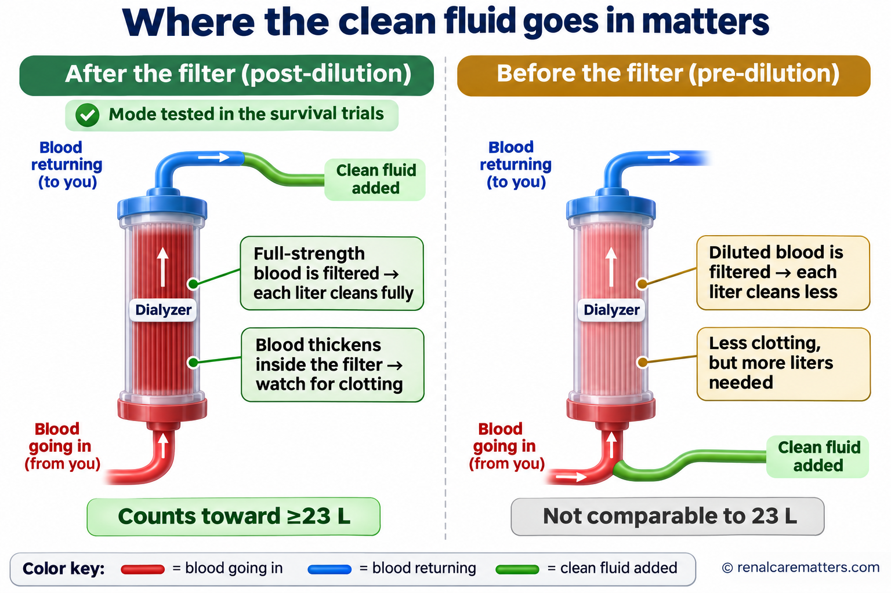
Post-dilution adds the clean fluid after the filter, the mode used in the survival trials. Pre-dilution adds it before the filter, so its liters are less efficient and cannot be compared with the 23-liter benchmark.Sa post-dilution, idinadagdag ang malinis na fluid pagkatapos ng filter, ang paraang ginamit sa mga pag-aaral sa pagkabuhay. Sa pre-dilution, idinadagdag ito bago ang filter, kaya hindi gaanong episyente ang mga litro nito at hindi maikukumpara sa 23 litro.Sa post-dilution, idugang ang limpyo nga fluid human sa filter, ang paagi nga gigamit sa mga pagtuon sa pagkabuhi. Sa pre-dilution, idugang kini sa wala pa ang filter, busa dili kaayo episyente ang mga litro niini ug dili ikumpara sa 23 ka litro.King post-dilution, idagdag ing malinis a fluid kaybat ning filter, ing paralan a gimit karing pag-aral king pamagbiye. King pre-dilution, idagdag ya bayu ing filter, anya e masyadung episyente ding litru na at e malyaring ikumpara king 23 a litru.
HDF is not the same as expanded HDHindi pareho ang HDF at expanded HDDili pareho ang HDF ug expanded HDE la pareu ing HDF at expanded HD
Expanded hemodialysis (HDx) uses a special medium cut-off filter on an ordinary HD machine. It also removes more middle molecules, but it works differently and has not been tested for survival the way HDF has. The HDF results cannot be borrowed for HDx. See our HDx guide.Ang expanded hemodialysis (HDx) ay gumagamit ng espesyal na medium cut-off na filter sa karaniwang HD machine. Nagtatanggal din ito ng mas maraming middle molecule, pero iba ang paraan nito at hindi pa nasubok sa pagkabuhay gaya ng HDF. Hindi puwedeng hiramin ang resulta ng HDF para sa HDx. Basahin ang aming gabay sa HDx.Ang expanded hemodialysis (HDx) mogamit og espesyal nga medium cut-off nga filter sa naandang HD machine. Mokuha usab kini og mas daghang middle molecule, apan lahi ang paagi niini ug wala pa masulayi sa pagkabuhi sama sa HDF. Dili mahulam ang resulta sa HDF alang sa HDx. Basaha ang among giya sa HDx.Ing expanded hemodialysis (HDx) gagamit yang espesyal a medium cut-off a filter king karaniwan a HD machine. Mangalis ya murin dakal a middle molecule, oneng aliwa ya paralan at e pa ya asubuk king pamagbiye antimo ing HDF. E malyaring iramin ing resulta ning HDF para king HDx. Basan me ing giya mi king HDx.
What the studies found, in plain languageAng natuklasan ng mga pag-aaral, sa simpleng salitaAng nakaplagan sa mga pagtuon, sa yanong pulongIng akit dareng pag-aral, king simpling amanu
| QuestionTanongPangutanaKutang | What we knowAng alam natinAng nahibal-an natoIng balu tamu | How sureGaano katiyakUnsa ka siguradoMakananu katiyak |
|---|---|---|
| Does HDF help people live longer?Nakakatulong ba ang HDF para mabuhay nang mas matagal?Makatabang ba ang HDF aron mabuhi nga mas dugay?Makasaup ya ing HDF ban mabiye la ding tau mas mabayu? | Yes, in adults who can receive high volumes. One large trial and pooled analyses of several trials point the same way.Oo, sa mga nasa hustong gulang na kayang tumanggap ng mataas na volume. Isang malaking pag-aaral at pinagsamang pagsusuri ng ilang pag-aaral ang tumuturo sa iisang direksyon.Oo, sa mga hamtong nga makadawat og taas nga volume. Usa ka dakong pagtuon ug hiniusang pagsusi sa pipila ka pagtuon ang nagtudlo sa samang direksyon.Wa, karing matua a kaya dang tumanggap mataas a volume. Metung a maragul a pag-aral at pigsamang pamanyuri dareng aliwang pag-aral ing tuturu king pareung direksyun. | ModerateKatamtamanKasaranganKatamtaman |
| Fewer heart deaths?Mas kaunting pagkamatay dahil sa puso?Mas gamay nga kamatayon tungod sa kasingkasing?Mas kakaunting kematayan uli ning pusu? | Probably, when the trials are pooled. The single largest trial could not show it by itself.Malamang, kapag pinagsama ang mga pag-aaral. Hindi ito naipakita ng pinakamalaking pag-aaral nang mag-isa.Lagmit, kung hiusahon ang mga pagtuon. Wala kini mapakita sa kinadak-ang pagtuon nga nag-inusara.Malamang, nung pisamasama ding pag-aral. E ne apakit ning pekamaragul a pag-aral a busbus ya. | ModerateKatamtamanKasaranganKatamtaman |
| Fewer hospital stays?Mas kaunting pagka-ospital?Mas gamay nga pagka-ospital?Mas kakaunting pamag-ospital? | Not shown.Hindi naipakita.Wala mapakita.E apakit. | LowMababaUbosMababa |
| Do I feel better?Mas gaganda ba ang pakiramdam ko?Mas maayo ba akong pamati?Mas sasanting ya ing pakiramdam ku? | People in both groups slowly felt worse over time, but some areas (physical function, thinking as people rated it, pain, and social life) declined more slowly with HDF. It is not a cure for tiredness.Unti-unting lumala ang pakiramdam ng mga tao sa parehong grupo, pero ang ilang bahagi (pisikal na kakayahan, pag-iisip ayon sa sariling tantiya, sakit, at buhay panlipunan) ay mas mabagal bumaba sa HDF. Hindi ito lunas sa pagod.Hinay-hinay nga misamot ang pamati sa mga tawo sa duha ka grupo, apan ang pipila ka bahin (pisikal nga kapasidad, panghunahuna sumala sa ilang kaugalingong tan-aw, sakit, ug sosyal nga kinabuhi) mas hinay nga mius-os sa HDF. Dili kini tambal sa kakapoy.Dahan-dahang menasama ing pakiramdam dareng tau king adwang grupu, oneng ding aliwang bage (pisikal a kakayanan, pamanisip agpang king sariling tantya, sakit, at bie king aliwang tau) mas malambat a minababa king HDF. E ya lunas king kapagal. | LowMababaUbosMababa |
| Is it safe?Ligtas ba ito?Luwas ba kini?Ligtas ya? | Side effects during sessions were similar to HD in trials, in units with strict water-quality systems.Katulad ng HD ang mga side effect habang session sa mga pag-aaral, sa mga unit na may mahigpit na sistema sa kalidad ng tubig.Susama sa HD ang mga side effect samtang session sa mga pagtuon, sa mga unit nga adunay estrikto nga sistema sa kalidad sa tubig.Kapareu ning HD ding side effect kabang session karing pag-aral, karing unit a atin mahigpit a sistema king kalidad ning danum. | ModerateKatamtamanKasaranganKatamtaman |
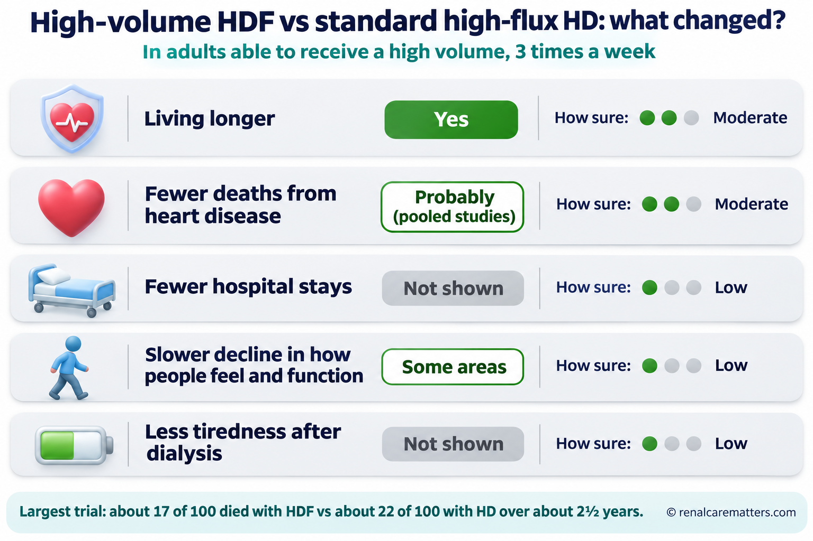
What high-volume HDF changed compared with high-flux HD, and how sure we are. Survival has the strongest evidence; hospital stays and tiredness did not clearly improve.Ang binago ng high-volume HDF kumpara sa high-flux HD, at gaano tayo katiyak. Pinakamalakas ang ebidensiya sa pagkabuhay; hindi malinaw na bumuti ang pagka-ospital at pagod.Ang giusab sa high-volume HDF kumpara sa high-flux HD, ug unsa kita ka sigurado. Pinakalig-on ang ebidensya sa pagkabuhi; wala klaro nga miayo ang pagka-ospital ug kakapoy.Ing mibayu ning high-volume HDF kumpara king high-flux HD, at makananu tamung katiyak. Pekamatibe ing ebidensya king pamagbiye; e malino a meyayu ing pamag-ospital at kapagal.
- HD
- Hemodialysis
- HDF
- Hemodiafiltration
Newer evidence from 2026 adds weight. A Cochrane review of 62 studies concluded that convective dialysis, mainly HDF, likely lowers the risk of death. A study of almost 20,000 people treated in routine European dialysis centers also found fewer deaths with sustained high-volume HDF, though a study of that kind cannot fully rule out that healthier people were the ones who received HDF. A large United Kingdom trial (H4RT) has finished recruiting; its results had not been published when this guide was written.Nagdagdag ng bigat ang mas bagong ebidensiya mula 2026. Sinabi ng isang Cochrane review ng 62 pag-aaral na malamang na binabawasan ng convective dialysis, pangunahin ang HDF, ang panganib ng kamatayan. Isang pag-aaral din ng halos 20,000 tao sa karaniwang dialysis center sa Europa ang nakakita ng mas kaunting namatay sa tuloy-tuloy na high-volume HDF, bagaman hindi kayang alisin nang lubos ng ganitong pag-aaral ang posibilidad na mas malulusog na tao ang nabigyan ng HDF. Natapos na ang pagkuha ng kalahok sa isang malaking pag-aaral sa United Kingdom (H4RT); hindi pa nailalathala ang resulta nito nang isulat ang gabay na ito.Nagdugang og gibug-aton ang mas bag-ong ebidensya gikan sa 2026. Miingon ang usa ka Cochrane review sa 62 ka pagtuon nga lagmit makapaubos ang convective dialysis, kasagaran HDF, sa peligro sa kamatayon. Usa usab ka pagtuon sa hapit 20,000 ka tawo sa naandang dialysis center sa Europa ang nakakita og mas gamay nga namatay sa padayon nga high-volume HDF, bisan pa nga dili hingpit makuha sa ingon niini nga pagtuon ang posibilidad nga mas himsog nga mga tawo ang nahatagan og HDF. Nahuman na ang pagkuha og partisipante sa usa ka dakong pagtuon sa United Kingdom (H4RT); wala pa mapatik ang resulta niini sa dihang gisulat kining giya.Mamandagdag bigat ing mas bayung ebidensya ibat king 2026. Sinabi ning metung a Cochrane review ning 62 a pag-aral a malamang mamababa ing convective dialysis, pekamarimla ing HDF, king panganib ning kematayan. Metung murin a pag-aral ning malapit 20,000 a tau karing karaniwan a dialysis center king Europa ing akit dang mas kakaunting mete king tuloy-tuloy a high-volume HDF, maliban king e kayang alisan a lubus ning anti kaniting pag-aral ing posibilidad a mas masalusu a tau ing mebyan HDF. Mebusni ing pamakua kalahuk king metung a maragul a pag-aral king United Kingdom (H4RT); e pa milalwal ing resulta na kanita sinulat ing giya a ini.
Who the evidence fits, and where it is thinKanino tugma ang ebidensiya, at saan ito kulangKang kinsa haom ang ebidensya, ug asa kini kulangNanu ing tugma ning ebidensya, at nokarin ya kulang
The evidence fits best if you are an adult on in-center hemodialysis three times a week, your fistula, graft, or catheter gives steady blood flow, you tolerate your sessions, and you want HDF. No single feature, such as age, diabetes, heart disease, or having a catheter, automatically rules you in or out. What matters is whether you can actually receive a high volume session after session.Pinakaangkop ang ebidensiya kung ikaw ay nasa hustong gulang na nagda-dialysis sa center tatlong beses isang linggo, ang fistula, graft, o catheter mo ay nagbibigay ng tuloy-tuloy na daloy ng dugo, kaya mo ang iyong mga session, at gusto mo ang HDF. Walang iisang katangian, tulad ng edad, diabetes, sakit sa puso, o pagkakaroon ng catheter, na awtomatikong nagsasama o nag-aalis sa iyo. Ang mahalaga ay kung talagang makakatanggap ka ng mataas na volume session pagkatapos ng session.Labing haom ang ebidensya kung ikaw hamtong nga nagpa-dialysis sa center tulo ka beses sa usa ka semana, ang imong fistula, graft, o catheter naghatag og padayon nga agos sa dugo, makaya nimo ang imong mga session, ug gusto nimo ang HDF. Walay usa ka kinaiya, sama sa edad, diabetes, sakit sa kasingkasing, o adunay catheter, nga awtomatikong maglakip o magpagawas kanimo. Ang importante mao kung makadawat ba gyud ka og taas nga volume matag session.Pekaangkup ing ebidensya nung matua ka a mag-dialysis king center makatlu king metung a dominggu, ing fistula, graft, o catheter mu mibie yang tuloy-tuloy a agus ning daya, kaya mu ding session mu, at buri mu ing HDF. Ala yang metung a katangian, antimo ing idad, diabetes, sakit king pusu, o atin catheter, a awtomatikung mamasok o mangalis keka. Ing mayalaga, nung talagang makatanggap ka mataas a volume balang session.
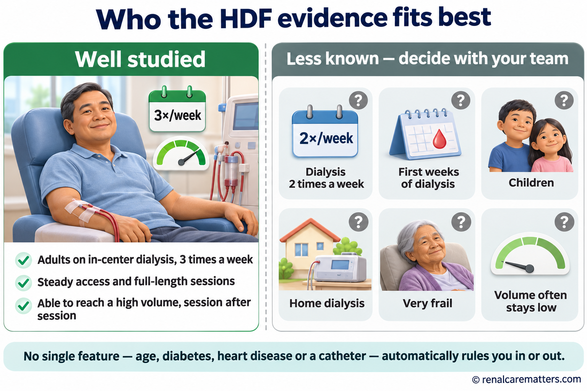
The survival evidence comes mainly from adults on in-center dialysis three times a week who could receive a high volume. For other situations the evidence is thin, and the decision rests on your team and your goals.Ang ebidensiya sa pagkabuhay ay galing pangunahin sa mga nasa hustong gulang na nagda-dialysis sa center tatlong beses isang linggo na kayang tumanggap ng mataas na volume. Sa ibang sitwasyon, kulang ang ebidensiya, at nakasalalay ang desisyon sa iyong team at sa iyong mga layunin.Ang ebidensya sa pagkabuhi gikan kasagaran sa mga hamtong nga nagpa-dialysis sa center tulo ka beses sa usa ka semana nga makadawat og taas nga volume. Sa ubang sitwasyon, kulang ang ebidensya, ug nagdepende ang desisyon sa imong team ug sa imong mga tumong.Ing ebidensya king pamagbiye ibat ya pekamarimla karing matua a mag-dialysis king center makatlu king metung a dominggu a kaya dang tumanggap mataas a volume. King aliwang sitwasyun, kulang ing ebidensya, at makasalalay ing desisyun king team mu at karing layunin mu.
- HDF
- Hemodiafiltration
Where we have little or no evidenceKung saan kaunti o walang ebidensiyaDiin gamay o walay ebidensyaNung nu kakaunti o ala yang ebidensya
Dialysis twice a week or incremental dialysis; the first weeks after starting dialysis; children; home HD; very frail people; and people whose access or blood pressure keeps volumes low. In these situations the decision rests on your team's judgment and your goals, not on the trial numbers.Dialysis dalawang beses isang linggo o incremental dialysis; ang mga unang linggo matapos magsimula ng dialysis; mga bata; home HD; napakahinang mga tao; at mga taong ang access o presyon ng dugo ay nagpapababa ng volume. Sa mga sitwasyong ito, nakasalalay ang desisyon sa paghuhusga ng iyong team at sa iyong mga layunin, hindi sa numero ng pag-aaral.Dialysis kaduha sa usa ka semana o incremental dialysis; ang unang mga semana human magsugod og dialysis; mga bata; home HD; luya kaayo nga mga tawo; ug mga tawo nga ang access o presyon sa dugo nagpaubos sa volume. Niining mga sitwasyon, nagdepende ang desisyon sa paghukom sa imong team ug sa imong mga tumong, dili sa numero sa pagtuon.Dialysis makadwa king metung a dominggu o incremental dialysis; ding mumunang dominggu kaybat mumpisa dialysis; reng anak; home HD; makapaluyang tau; at reng tau a ing access o presyun ning daya ra mamababa king volume. Karing sitwasyun a reni, makasalalay ing desisyun king pamanimbang ning team mu at karing layunin mu, e karing numeru ning pag-aral.
Four questions, in orderApat na tanong, sunod-sunodUpat ka pangutana, sunod-sunodApat a kutang, sunud-sunud
If any answer is still "not yet"Kung "hindi pa" ang alinmang sagotKung "dili pa" ang bisan unsang tubagNung "e pa" ing nanumang sagot
Keep going with good high-flux HD while the team fixes the limiting factor. You are not getting "second-class" treatment by waiting. Switching to HDF that cannot reach a high volume is not the HDF that was proven in the trial.Ituloy ang maayos na high-flux HD habang inaayos ng team ang hadlang. Hindi ka binibigyan ng "pangalawang klase" na gamutan habang naghihintay. Ang paglipat sa HDF na hindi umaabot sa mataas na volume ay hindi ang HDF na napatunayan sa pag-aaral.Padayon sa maayong high-flux HD samtang ayohon sa team ang babag. Wala ka gihatagi og "ikaduhang klase" nga pagtambal samtang naghulat. Ang pagbalhin sa HDF nga dili makaabot sa taas nga volume dili mao ang HDF nga napamatud-an sa pagtuon.Ituloy ing mayap a high-flux HD kabang ayusan ning team ing aharang. E ka bibyan "ikaduang klasi" a panulu kabang maintai ka. Ing pamanlipat king HDF a e abutan ing mataas a volume, e ya ing HDF a apatunayan king pag-aral.
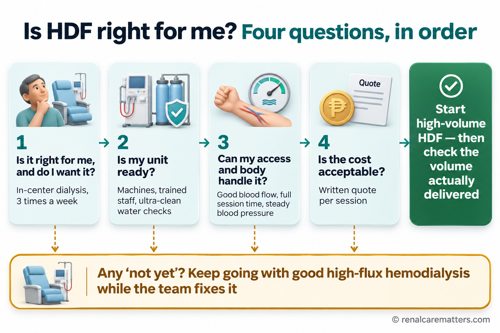
The four decisions in order. Any unresolved step leads to continued high-flux hemodialysis while the team works on that step, not to a lower-quality HDF.
- HD
- Hemodialysis
- HDF
- Hemodiafiltration
What PhilHealth covers and what you may payAng sakop ng PhilHealth at ang maaaring bayaran moAng sakop sa PhilHealth ug ang mahimong bayran nimoIng sakup ning PhilHealth at ing malyaring bayaran mu
Under Circular 2024-0023 of the Philippine Health Insurance Corporation (PhilHealth), PhilHealth pays up to ₱6,350 per hemodialysis session for up to 156 sessions a calendar year for eligible members and dependents with chronic kidney disease stage 5, at accredited facilities. Items inside the package should carry no extra charge. PhilHealth lists hemodiafiltration among the premium services outside the package, so a unit may charge you extra for it.Sa ilalim ng PhilHealth Circular 2024-0023, nagbabayad ang PhilHealth ng hanggang ₱6,350 bawat session ng hemodialysis para sa hanggang 156 session bawat taon para sa mga kwalipikadong miyembro at dependent na may chronic kidney disease stage 5, sa mga accredited na pasilidad. Walang dagdag na singil dapat ang mga kasama sa package. Inililista ng PhilHealth ang hemodiafiltration bilang isa sa mga premium service na labas sa package, kaya puwede kang singilin ng dagdag ng unit para dito.Ubos sa PhilHealth Circular 2024-0023, mobayad ang PhilHealth og hangtod ₱6,350 matag session sa hemodialysis alang sa hangtod 156 ka session matag tuig alang sa mga kwalipikado nga miyembro ug dependent nga adunay chronic kidney disease stage 5, sa mga accredited nga pasilidad. Walay dugang bayad angay ang mga sulod sa package. Gilista sa PhilHealth ang hemodiafiltration isip usa sa mga premium service nga gawas sa package, busa mahimong pabayran ka og dugang sa unit alang niini.King lalam ning PhilHealth Circular 2024-0023, mamayad ya ing PhilHealth anggang ₱6,350 balang session ning hemodialysis para anggang 156 a session balang taun para karing kwalipikadung miembru at dependent a atin chronic kidney disease stage 5, karing accredited a pasilidad. Ala dapat dagdag a bayad ding kayabe king package. Ilista ning PhilHealth ing hemodiafiltration kayabe dareng premium service a ali kayabe king package, anya malyari kang pabayaran dagdag ning unit para kaniti.
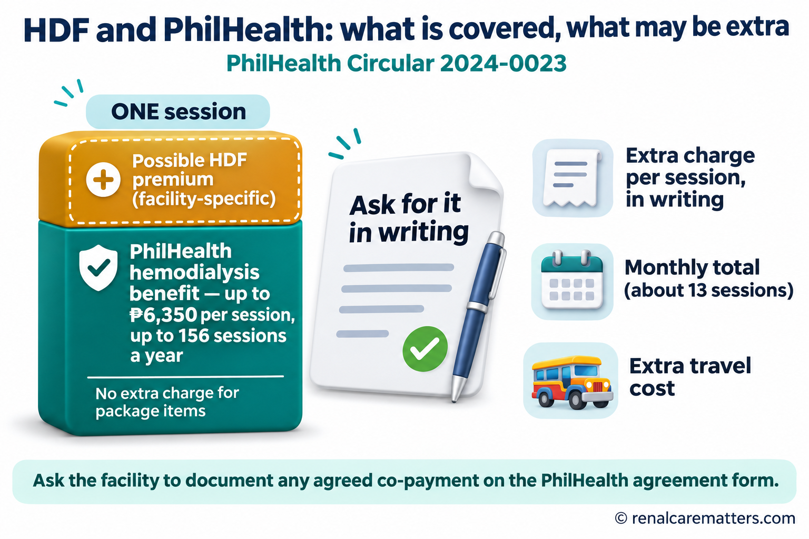
PhilHealth pays up to ₱6,350 per hemodialysis session for up to 156 sessions a year. HDF is listed as a premium service, so any extra charge is separate and must be disclosed in writing.Nagbabayad ang PhilHealth ng hanggang ₱6,350 bawat session ng hemodialysis para sa hanggang 156 session bawat taon. Nakalista ang HDF bilang premium service, kaya hiwalay ang anumang dagdag na singil at dapat nakasulat.Mobayad ang PhilHealth og hangtod ₱6,350 matag session sa hemodialysis alang sa hangtod 156 ka session matag tuig. Nakalista ang HDF isip premium service, busa lahi ang bisan unsang dugang bayad ug kinahanglan nga sinulat.Mamayad ya ing PhilHealth anggang ₱6,350 balang session ning hemodialysis para anggang 156 a session balang taun. Nakalista ya ing HDF bilang premium service, anya iwalay ing nanumang dagdag a bayad at dapat nakasulat.
- HDF
- Hemodiafiltration
- PhilHealth
- Philippine Health Insurance Corporation
No fixed HDF surcharge exists across the Philippines; prices differ by facility and change over time. Use the patient cost tool in our HDx & Convection Toolkit to total a quote you have been given. Example: a ₱500 premium plus ₱100 extra transport per session, for 12 sessions, comes to ₱7,200.Walang nakapirming dagdag na singil sa HDF sa buong Pilipinas; iba-iba ang presyo sa bawat pasilidad at nagbabago sa paglipas ng panahon. Gamitin ang patient cost tool sa aming HDx & Convection Toolkit para kuwentahin ang quote na ibinigay sa iyo. Halimbawa: ₱500 na premium at ₱100 na dagdag na pamasahe bawat session, sa 12 session, ay ₱7,200.Walay piho nga dugang bayad sa HDF sa tibuok Pilipinas; lain-lain ang presyo sa matag pasilidad ug mausab sa paglabay sa panahon. Gamita ang patient cost tool sa among HDx & Convection Toolkit aron kuwentahon ang quote nga gihatag kanimo. Pananglitan: ₱500 nga premium ug ₱100 nga dugang plete matag session, sa 12 ka session, mokabat og ₱7,200.Ala yang pirming dagdag a bayad king HDF king sablang Pilipinas; aliwa-aliwa ing presyu king balang pasilidad at magbayu ya king panaun. Gamitan me ing patient cost tool king HDx & Convection Toolkit mi ban kuwentan ing quote a mibie keka. Alimbawa: ₱500 a premium at ₱100 a dagdag a pamasahe balang session, king 12 a session, ₱7,200 ya.
Questions to ask your dialysis teamMga tanong para sa iyong dialysis teamMga pangutana alang sa imong dialysis teamReng kutang para king dialysis team mu
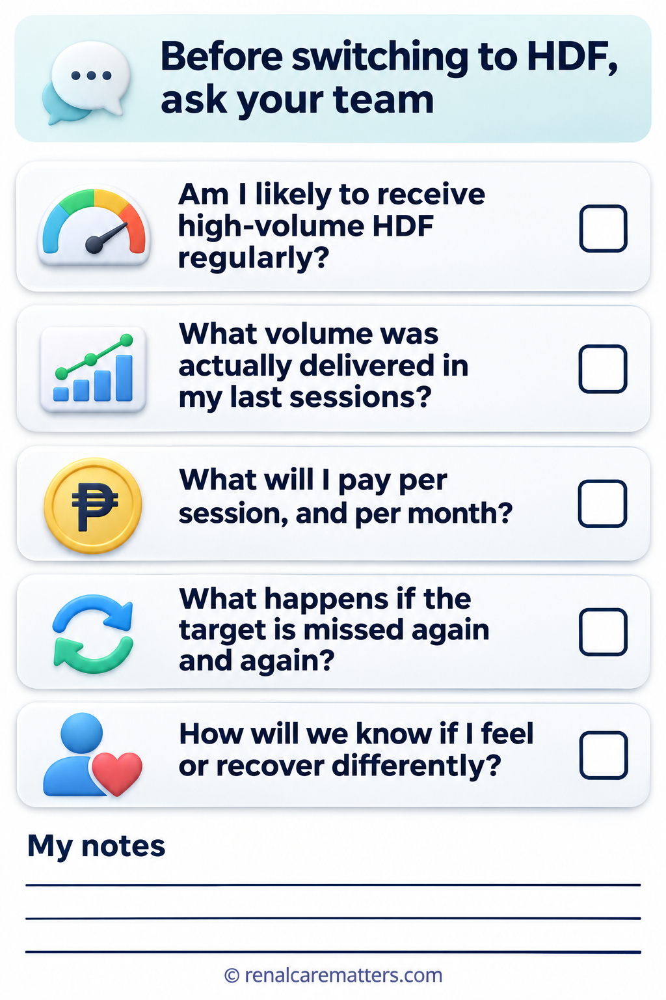
Five questions to bring to your dialysis team. You can save or print this card.Limang tanong na dadalhin sa iyong dialysis team. Puwede mong i-save o i-print ang card na ito.Lima ka pangutana nga dad-on sa imong dialysis team. Mahimo nimong i-save o i-print kining card.Limang kutang a dalan mu king dialysis team mu. Malyari mung i-save o i-print ing card a iti.
- HDF
- Hemodiafiltration
Common questionsMga karaniwang tanongKasagarang pangutanaReng karaniwan a kutang
The short answer for clinicians
High-volume post-dilution online hemodiafiltration (HDF) is a reasonable preferred option for adults on thrice-weekly maintenance in-center hemodialysis (HD) when the unit can deliver it safely and consistently and the patient wants it. High-flux HD remains appropriate standard care when HDF is unavailable, unsuitable, burdensome or cannot be delivered reliably. The best direct survival evidence comes from adults selected for their ability to receive a convection volume of at least 23 L per session, so "the new standard" holds for that population and that dose, not for HDF as a label.
Mortality
CONVINCE: hazard ratio (HR) 0.77 (95% confidence interval [CI] 0.65–0.93) for all-cause death; individual participant data (IPD) meta-analysis HR 0.84 (0.74–0.95); Cochrane 2026 risk ratio (RR) 0.88 (0.80–0.96), moderate certainty.
Not shown
Fewer hospitalizations; fewer nonfatal cardiovascular (CV) events; relief of fatigue; benefit at low convection volume, with pre-dilution, twice-weekly or incremental schedules, or in children.
Decision hinges on
Unit readiness (ultrapure fluid, validated online substitution, staff), deliverable dose (access, blood flow, time, tolerance), patient preference and out-of-pocket cost in the Philippines.
Why convection reaches what diffusion misses
Diffusion moves solute down its concentration gradient at a rate that falls steeply with molecular size, because the diffusive coefficient scales roughly inversely with molecular radius. Urea (60 Da) and potassium are cleared efficiently; β2-microglobulin (β2M, about 11.8 kDa), free light chains, complement factor D and many cytokines are cleared poorly even across high-flux membranes. Convection moves plasma water across the membrane under a transmembrane pressure (TMP) gradient, and solutes small enough to pass the pores are carried with that water at a rate set by the ultrafiltration flux and each solute's sieving coefficient, largely independent of size up to the membrane cut-off. Convective clearance therefore scales with the volume of water filtered, which is why HDF behaves as a dose-dependent therapy.
Because the filtered volume far exceeds the fluid the patient needs to lose, sterile, nonpyrogenic substitution fluid is reinfused. In post-dilution HDF it enters downstream of the dialyzer, so the filter sees undiluted blood and each liter filtered carries the full plasma solute concentration; the limit is hemoconcentration inside the fiber, which rises with filtration fraction and raises TMP, protein layering and clotting risk. In pre-dilution HDF, fluid enters upstream, diluting blood before the membrane; much larger volumes are possible but each liter is less efficient, so pre-dilution liters are not interchangeable with post-dilution liters and should never be read against the 23 L benchmark. Convection volume is defined as substitution volume + net ultrafiltration (Tattersall & Ward, 2013).
Worked example: substitution versus net removal
- Substitution volume delivered: 21 L
- Net ultrafiltration (patient fluid removal): 2 L
- Convection volume = 21 + 2 = 23 L; the patient loses 2 L net.
- Over 240 minutes, total filtration of 23 L requires about 96 mL/min, which is about 27% of a 350 mL/min blood flow (arithmetic illustration only; achievable filtration depends on hematocrit, total protein, membrane, device limits and local protocol).
The practical levers are therefore blood flow, effective treatment time and the achievable filtration fraction. Raising net ultrafiltration to "hit 23 L" is a prescribing error: it converts a solute-clearance target into a volume-removal and hypotension risk.
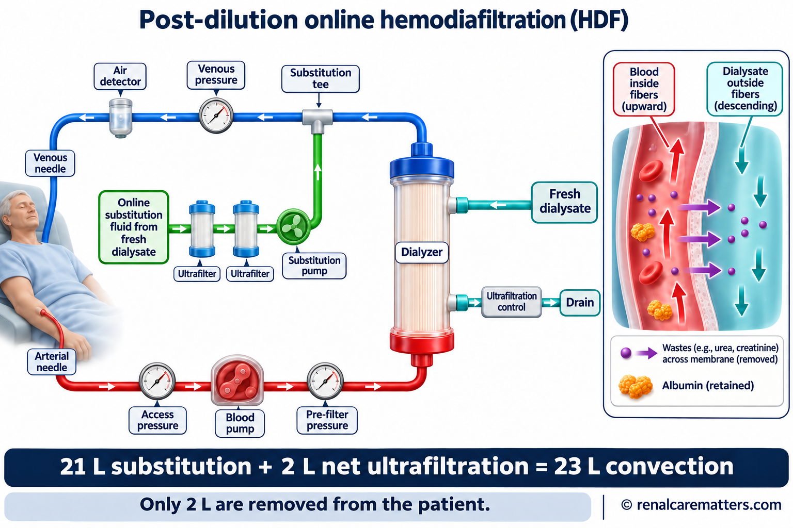
Post-dilution online HDF. Ultrapure dialysis fluid passes through additional ultrafilters to make sterile, nonpyrogenic substitution fluid, which is reinfused after the dialyzer. Convection volume is substitution plus net ultrafiltration.
- HDF
- Hemodiafiltration
- UF
- Ultrafiltration
- TMP
- Transmembrane pressure
- Qb
- Blood flow rate
Post-dilution adds the clean fluid after the filter, the mode used in the survival trials. Pre-dilution adds it before the filter, so its liters are less efficient and cannot be compared with the 23-liter benchmark.Sa post-dilution, idinadagdag ang malinis na fluid pagkatapos ng filter, ang paraang ginamit sa mga pag-aaral sa pagkabuhay. Sa pre-dilution, idinadagdag ito bago ang filter, kaya hindi gaanong episyente ang mga litro nito at hindi maikukumpara sa 23 litro.Sa post-dilution, idugang ang limpyo nga fluid human sa filter, ang paagi nga gigamit sa mga pagtuon sa pagkabuhi. Sa pre-dilution, idugang kini sa wala pa ang filter, busa dili kaayo episyente ang mga litro niini ug dili ikumpara sa 23 ka litro.King post-dilution, idagdag ing malinis a fluid kaybat ning filter, ing paralan a gimit karing pag-aral king pamagbiye. King pre-dilution, idagdag ya bayu ing filter, anya e masyadung episyente ding litru na at e malyaring ikumpara king 23 a litru.
Why might more convection lower mortality?
The mechanism of the survival effect is not established, and the evidence ladder matters here. Established physiology: HDF lowers predialysis β2M and other middle-molecule concentrations. Mechanistic hypotheses: less chronic inflammation and endothelial injury from retained middle molecules, better hemodynamic stability from convective heat loss and sodium kinetics, and the ultrapure fluid that HDF requires. In CONVINCE the mortality difference was not driven by CV death and an infection-related signal appeared, a pattern that does not fit a simple "middle molecules cause atherosclerosis" story. Treat any mechanism as plausible but unproven, and anchor the recommendation on the outcome data, not on biomarker change.
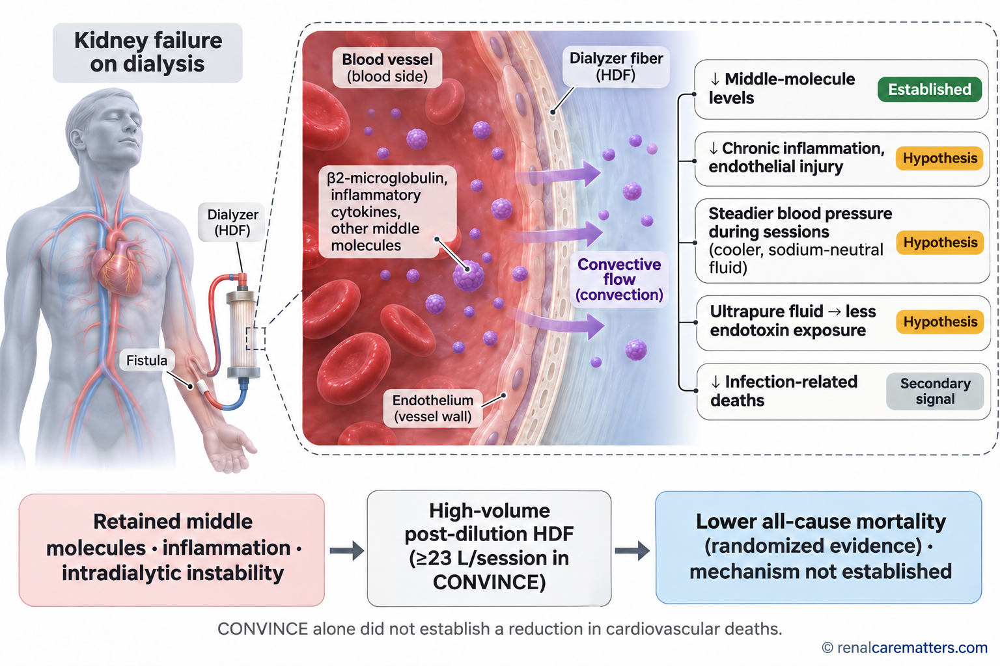
HDF reliably lowers middle-molecule levels; why it lowered mortality is not established, and the leading explanations remain hypotheses. CONVINCE alone did not show a reduction in cardiovascular deaths.
- HDF
- Hemodiafiltration
- β2M
- β2-microglobulin
How HDF differs from expanded HD
Expanded hemodialysis (HDx) uses a medium cut-off (MCO) membrane whose larger pores and internal filtration–backfiltration enhance middle-molecule removal on a standard HD machine without online substitution fluid. It is a different membrane strategy with different albumin handling and no hard-outcome trial; the HDF mortality evidence cannot be assigned to it. See Expanded Hemodialysis (HDx).
The evidence, appraised
CONVINCE, the pivotal trial
CONVINCE was a pragmatic, multinational, open-label trial of 1,360 adults on high-flux HD for at least 3 months who were judged able to achieve a convection volume of at least 23 L per session and to complete patient-reported outcome assessments (Blankestijn et al., 2023). High-dose post-dilution HDF (n = 683) was compared with continued high-flux HD (n = 677). Mean delivered convection volume was 25.3 L per session, and the target was reached in about 92% of delivered HDF sessions. Over a median 30 months (interquartile range 27–38), death from any cause occurred in 118 of 683 (17.3%) versus 148 of 677 (21.9%), HR 0.77 (0.65–0.93).
| CONVINCE endpoint | HDF vs high-flux HD | Reading |
|---|---|---|
| All-cause death (primary) | HR 0.77 (0.65–0.93); 118/683 vs 148/677 | Crude difference 4.6 percentage points over trial follow-up; crude number needed to treat (NNT) about 22 over roughly 30 months |
| CV death | HR 0.81 (0.49–1.33) | Inconclusive alone |
| Fatal or nonfatal CV events | HR 1.07 (0.86–1.33) | No difference shown |
| Infection-related death, including coronavirus disease 2019 (COVID-19) | HR 0.69 (0.49–0.96) | Secondary signal; the estimate excluding COVID-19 deaths (0.68, 0.42–1.10) is imprecise |
| Recurrent all-cause hospitalization | HR 1.11 (0.98–1.25) | No benefit shown |
The crude proportions come from variable follow-up and are shown for scale; the HR is the time-to-event comparison. Secondary-outcome estimates are from the trial's endpoint table; verify against the primary publication before quoting in decision aids.
Appraisal. Randomization was robust and the primary endpoint is hard. Limits: open label; a selected, relatively healthy population (eligibility required capacity for high convection and questionnaire completion); European care settings; follow-up overlapping the COVID-19 pandemic; and a mortality effect without a matching CV or hospitalization effect. Funding was public (European Commission Horizon 2020); industry partners collaborated, and several investigators have device-manufacturer affiliations.
Earlier randomized trials
| Trial | Population and comparator | All-cause death | Interpretation |
|---|---|---|---|
| ESHOL (Maduell et al., 2013) | 906 adults; post-dilution online HDF vs continued HD (mostly high-flux) | HR 0.70 (0.53–0.92) | Supportive; infection-related death HR 0.45 (0.21–0.96). Post-randomization discontinuation and access-related selection complicate interpretation |
| CONTRAST (Grooteman et al., 2012) | 714 adults; post-dilution HDF vs low-flux HD; mean 3.0 years | HR 0.95 (0.75–1.20) | Neutral; higher achieved-volume associations are on-treatment and exploratory |
| Turkish online HDF trial (Ok et al., 2013) | 782 adults; post-dilution HDF vs high-flux HD; mean substitution about 17 L | Composite event-free survival 77.6% vs 74.8% (P = .28) | Neutral at a low delivered volume; post hoc >17.4 L substitution subgroup is hypothesis-generating, not a causal cut-off |
| FRENCHIE (Morena et al., 2017) | 381 adults over 65; online HDF vs high-flux HD; tolerance endpoint | Not powered | At least one intradialytic adverse event in 84% vs 85% of patients; fewer hypotension and cramp episodes at the session level (exploratory) |
Syntheses (overlapping, not independent)
The IPD meta-analysis pooled five trials (4,153 participants, including CONVINCE and CONTRAST's low-flux comparator) with a median 30-month follow-up: all-cause HR 0.84 (0.74–0.95), about 23 versus 27 deaths per 100, and CV mortality HR 0.78 (0.64–0.96) (Vernooij et al., 2024). Mortality fell across rising achieved convection volume, but achieved dose was not randomized and tracks access quality, tolerance, treatment time and center practice, so the dose–response curve is associational. The Cochrane review (October 2026; 62 studies, 6,897 participants, search to April 2025) found that convective therapy likely reduces all-cause death (RR 0.88, 0.80–0.96; 15 studies, 5,463 participants) and CV death (RR 0.78, 0.66–0.92; 9 studies, 4,761), both moderate certainty downgraded for indirectness, with no clear effect on CV morbidity (RR 1.05), fatigue, access problems or hospitalization (Vernooij et al., 2026). Both syntheses share their key trials with each other and with CONVINCE, so they corroborate rather than replicate.
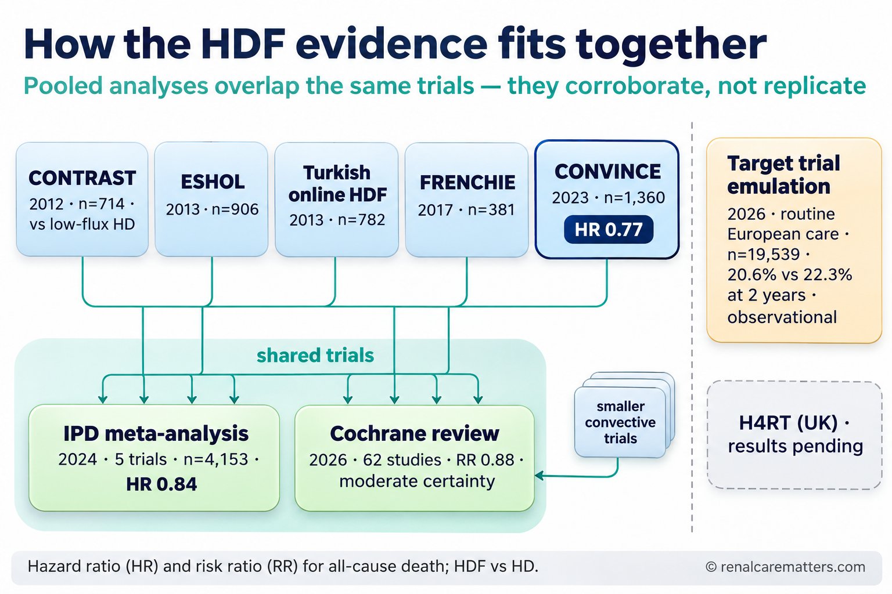
The two pooled analyses draw on the same core trials, so they corroborate CONVINCE rather than replicate it independently. The registry study is observational; H4RT is pending.
- HDF
- Hemodiafiltration
- HD
- Hemodialysis
- HR
- Hazard ratio
- RR
- Risk ratio
- IPD
- Individual participant data
Real-world evidence
A multinational target trial emulation from a European clinical database (8 countries, 19,539 eligible at day 91 of dialysis, 2014–2019) compared sustained high-volume post-dilution HDF with high-flux HD using inverse probability weighting (Strippoli et al., 2026a). HDF was associated with lower mortality (HR 0.72, 0.67–0.77); weighted 2-year cumulative mortality was 20.6% versus 22.3% (absolute difference 1.7 percentage points), with transplantation as a competing event. It supports transportability to incident patients in routine care, but residual confounding by indication remains, the data come from a single provider network, and several authors are employees of that provider. The stronger relative association in patients with pre-existing CV disease contrasts with randomized subgroup analyses, another reason not to select patients by subgroup.
Patient-reported outcomes
In CONVINCE, all eight Patient-Reported Outcomes Measurement Information System (PROMIS) domains worsened in both arms; a mortality-adjusted joint model showed slower decline with HDF in physical function, patient-perceived cognitive function, pain interference and social participation (Rose et al., 2024). A 2026 prespecified subgroup analysis of 1,211 participants found no convincing heterogeneity; its nominal interactions are hypothesis-generating and should not drive patient selection (Cromm et al., 2026). Perceived cognition is self-reported, so do not promise objective cognitive improvement or symptom relief.
Absolute effects explorer
Converts each source's published figures into events per 1,000 over its own follow-up. Do not compare across sources with different designs, populations or durations.
| Arm | Deaths per 1,000 | Source figures |
|---|
Cost-effectiveness
A trial-based cost-utility analysis from a societal perspective at European prices estimated 2-year incremental cost-effectiveness ratios (ICERs) of €31,898 and €37,344 per quality-adjusted life year (QALY), depending on staffing-cost assumptions, and €27,068 to €36,751 over a lifetime model; much of the extra cost came from dialysis in life-years gained rather than from the HDF session itself (Schouten et al., 2025). These figures do not transfer to Philippine payers, facilities or patients and should not be converted into a local value claim.
Pending
H4RT, a United Kingdom registry-linked randomized trial (ISRCTN10997319), compares high-volume HDF, targeting at least 21 L of substitution fluid adjusted for body surface area, with high-flux HD on a composite of non-cancer death or hospitalization for CV events or infection (Caskey et al., 2022). No peer-reviewed primary results were located as of November 21, 2026. Note that its dose definition (body-size-adjusted substitution volume) differs from CONVINCE's convection volume.
What the guidance bodies say
Strength and certainty are shown separately, in each body's own vocabulary. No Kidney Disease: Improving Global Outcomes (KDIGO) guideline currently grades HDF against high-flux HD.
| Body (year) | Statement | Strength | Certainty |
|---|---|---|---|
| Italian Society of Nephrology, international panel (2026) | Online post-dilution HDF to reduce CV mortality in adults on maintenance HD | Strong ("we recommend") | Moderate; Grading of Recommendations Assessment, Development and Evaluation (GRADE) |
| Italian Society of Nephrology (2026) | High-volume HDF to reduce all-cause mortality | Conditional ("we suggest") | Moderate |
| Italian Society of Nephrology (2026) | High-volume HDF to slow decline in selected patient-reported domains | Conditional | Low |
| European Renal Association EuDial Working Group (2025) | HDF appears associated with improved overall and CV survival provided high convection volumes are achieved; generalizability depends on overall health | Consensus points (mini-Delphi); explicitly not a standard of care | Ungraded |
| National Institute for Health and Care Excellence (NICE) NG107, rec. 1.3.11 (2018) | For people who choose HD/HDF in center, consider HDF rather than HD | "Consider" (weaker NICE wording) | Pre-dates CONVINCE |
The Italian guidance drew its pooled CV-mortality estimate from the IPD analysis (HR 0.78), while CONVINCE alone could not show a CV-death effect (HR 0.81, wide CI). These answer related questions with different precision and are not in conflict. The guidance frames HDF as a dose-dependent therapy whose implementation requires optimization and monitoring of convection volume, adequate treatment time and blood flow, supporting infrastructure and patient preference (Strippoli et al., 2026b). EuDial treats the CONVINCE figure as a benchmark rather than a proven threshold; no step change in benefit at exactly 23 L has been shown, and body-size indexing remains exploratory (Battaglia et al., 2025).
This guide's interpretation (renalcarematters.com)
We read the evidence as supporting high-volume post-dilution HDF as a preferred option for adults on thrice-weekly in-center HD whose unit can deliver and audit it, and high-flux HD as fully appropriate care otherwise. We do not regard HDF as an obligation where access, tolerance, unit capability or cost would make delivery inconsistent.
Who the evidence does and does not cover
| Population or setting | Evidence status | Practical stance |
|---|---|---|
| Prevalent adults, thrice-weekly in-center HD, able to reach high volume | Directly studied (randomized) | Offer where the unit is ready |
| Incident patients (first 90 days) | Observational only | Reasonable once stable; prioritize access and volume control |
| Twice-weekly or incremental HD | No outcome data | Do not extrapolate the survival effect; see incremental dialysis |
| Catheter or graft access | Included but often lower delivered volume | Judge by delivered volume, not by access type alone |
| Very frail, recurrent intradialytic hypotension, short sessions | Underrepresented | Individualize; tolerance and goals first |
| Children, home HD | Limited (EuDial pediatric section; NICE home wording) | Specialist decision |
| Pre-dilution or mixed-dilution HDF | Not the mode tested for survival | Do not apply the 23 L benchmark |
| Asian and lower-resource settings | Poorly represented in trials | Expect transportability questions; audit local delivery |
The survival evidence comes mainly from adults on in-center dialysis three times a week who could receive a high volume. For other situations the evidence is thin, and the decision rests on your team and your goals.Ang ebidensiya sa pagkabuhay ay galing pangunahin sa mga nasa hustong gulang na nagda-dialysis sa center tatlong beses isang linggo na kayang tumanggap ng mataas na volume. Sa ibang sitwasyon, kulang ang ebidensiya, at nakasalalay ang desisyon sa iyong team at sa iyong mga layunin.Ang ebidensya sa pagkabuhi gikan kasagaran sa mga hamtong nga nagpa-dialysis sa center tulo ka beses sa usa ka semana nga makadawat og taas nga volume. Sa ubang sitwasyon, kulang ang ebidensya, ug nagdepende ang desisyon sa imong team ug sa imong mga tumong.Ing ebidensya king pamagbiye ibat ya pekamarimla karing matua a mag-dialysis king center makatlu king metung a dominggu a kaya dang tumanggap mataas a volume. King aliwang sitwasyun, kulang ing ebidensya, at makasalalay ing desisyun king team mu at karing layunin mu.
- HDF
- Hemodiafiltration
Avoid hard eligibility rules based on age, diabetes, baseline CV disease or access type. Subgroup signals across CONVINCE, the IPD analysis and the target trial emulation point in different directions and are exploratory. The question that predicts benefit is practical: can this patient receive high post-dilution volumes session after session without pushing net ultrafiltration or shortening treatment?
Decision pathway and unit readiness
Refer to device instructions and local regulatory requirements for water and fluid monitoring limits, sampling frequency, pressure and alarm handling; this guide does not set them. See dialysis water treatment systems for the unit-level background.
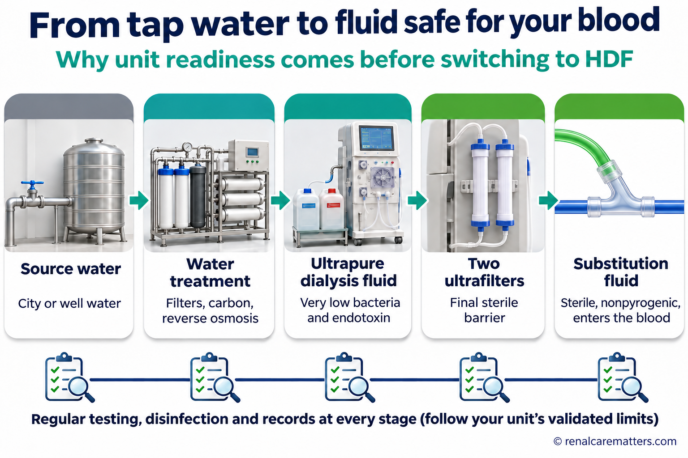
Online HDF makes its replacement fluid from ultrapure dialysis fluid passed through extra ultrafilters. Every stage needs regular testing, disinfection and records against the unit's validated limits.
- HDF
- Hemodiafiltration
Delivering the dose, and auditing it
Prescription principles
- Maximize effective blood flow the access can safely provide; protect treatment time. These two determine achievable filtration more than any machine setting.
- Use the device's automated substitution control where available, within manufacturer and unit limits on TMP and filtration fraction.
- Keep net ultrafiltration set by volume status and the ultrafiltration-rate limit, never by the convection target (ultrafiltration rate calculator).
- Individualize anticoagulation and electrolytes under local protocol; hemoconcentration in the post-dilution fiber increases clotting tendency.
- Preserve usual adequacy targets (single-pool Kt/V and dry-weight assessment) alongside convection monitoring (Kt/V calculator).
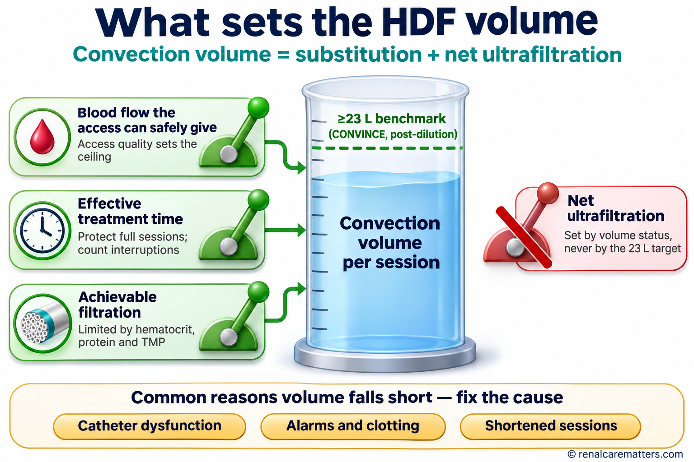
Blood flow, effective time and achievable filtration determine convection volume. Net ultrafiltration is set by fluid status and must never be raised to reach the benchmark.
- HDF
- Hemodiafiltration
- TMP
- Transmembrane pressure
Troubleshooting low convection volume
| Pattern | Likely cause | Response |
|---|---|---|
| Consistently low across sessions | Blood flow limited by access, catheter dysfunction, short time | Access assessment; extend time; review needle size and placement |
| Rising TMP, frequent alarms | High hematocrit or protein, membrane fouling, excessive filtration fraction | Review hemoglobin trend, anticoagulation and membrane; accept a lower substitution rate rather than repeated alarm cycling |
| Circuit clotting | Inadequate anticoagulation for post-dilution hemoconcentration | Revise anticoagulation per protocol |
| Early terminations, intradialytic hypotension | Excess net ultrafiltration, interdialytic gain, cardiac limits | Treat volume and hemodynamics first; do not raise net ultrafiltration to hit volume |
| Sessions switched to HD fallback | Logistics, machine availability, water system downtime | Track as a documentation metric; fix the system issue |
Follow-up after switching
Review, at a locally chosen interval: delivered time and convection volume per session; prescribed versus achieved net ultrafiltration; intradialytic symptoms and blood pressure; access performance; TMP alarms and clotting; adequacy; and the patient's goals. If convection is repeatedly low, review interruptions, access and tolerance before concluding HDF has "failed." The longitudinal audit tool in the HDx & Convection Toolkit reports the share of documented post-dilution sessions at or above 23 L, while keeping missing, fallback and missed sessions visible.
Philippine practice and costs
PhilHealth Circular 2024-0023 (Revision 2) pays up to ₱6,350 per session for up to 156 hemodialysis sessions per calendar year (up to ₱990,600) for eligible chronic kidney disease stage 5 members and dependents at accredited facilities, with a no-co-payment policy for package items in both public and private units (Philippine Health Insurance Corporation [PhilHealth], 2024a). The circular's guidance document lists hemodiafiltration among premium, non-covered services for which a facility may charge, alongside extra erythropoiesis-stimulating agent doses, additional laboratory tests, dialyzers beyond 32 per year and sessions beyond 156; co-payments must be disclosed on the per-session agreement form (Annex A), and nephrologist professional-fee co-payments are capped at ₱450 per additional service (PhilHealth, 2024b). The underlying HD benefit is therefore preserved for a patient who chooses HDF; the premium is a separate, disclosed charge.
The PhilHealth benefit is preserved for a patient who chooses HDF; any HDF premium is a separate, disclosed charge recorded on the per-session agreement form.
- HDF
- Hemodiafiltration
- PhilHealth
- Philippine Health Insurance Corporation
- No national HDF surcharge exists; quote facility-specific, dated figures and verify current PhilHealth policy before publishing any number.
- Units planning HDF should budget fixed costs (devices, water-system validation, training) and variable costs (substitution-line disposables, monitoring, staff time) against the incremental receipts they actually expect; the unit budget tool in the toolkit does this without importing European savings.
- The CONVINCE economic evaluation's euro ICERs cannot be converted into a Philippine value statement.
Point-of-care and planning tools
| Tool | Use |
|---|---|
| Single-session HDF convection | Convection volume for one session against the CONVINCE benchmark |
| Delivered HDF session audit (new) | Longitudinal view: median volume, share at ≥ 23 L among documented post-dilution sessions, with fallback, missed and undocumented sessions counted separately |
| HDF cost: patient premium and unit budget (new) | Total a quoted premium plus travel; model unit-level incremental budget and break-even receipts |
| HDF delivery feasibility (new, education) | Projected convection volume from effective minutes, mean substitution flow and net ultrafiltration |
| Dialysis kinetics | TMP and filtration fraction |
| Dialysis prescription | Blood flow, time and dialysate prescription |
Deliberately not built: individual survival prediction, eligibility scoring, pre/post-dilution equivalence and body-size outcome targets, because none is validated for this setting.
Pearls and pitfalls
- The intervention is the dose. "On HDF" without a delivered post-dilution volume is not the therapy tested in CONVINCE.
- Convection volume includes net ultrafiltration. Do not add net ultrafiltration to a machine total that already includes it.
- Mortality, not hospitalization. Counsel accordingly; do not promise fewer admissions or less fatigue.
- Overlap is not replication. The IPD and Cochrane estimates reuse the same core trials.
- Achieved-dose curves are confounded. Higher volume marks healthier patients with better access; it does not prove a threshold.
- HDx is a different therapy. Do not borrow HDF outcomes for medium cut-off membranes.
Evidence ledger and refresh triggers
| Source | Design | Key estimate | Role |
|---|---|---|---|
| CONVINCE 2023 | Randomized controlled trial (RCT), n = 1,360 | All-cause HR 0.77 (0.65–0.93) | Lead result |
| Vernooij 2024 | IPD meta-analysis, 5 RCTs, n = 4,153 | HR 0.84 (0.74–0.95); CV HR 0.78 | Pooled; overlaps CONVINCE |
| Cochrane 2026 | Systematic review, 62 studies | RR 0.88 (0.80–0.96); CV RR 0.78 | Broader convective question; overlaps |
| Strippoli 2026a | Target trial emulation, n = 19,539 | HR 0.72; 2-year 20.6% vs 22.3% | Real-world support; confounding possible |
| Rose 2024; Cromm 2026 | RCT secondary analyses | Slower decline in 4 PROMIS domains; no convincing subgroup heterogeneity | Patient-reported outcomes |
| Schouten 2025 | Trial-based cost-utility | €31,898–€37,344 per QALY (2-year) | European economics only |
| H4RT | Registry RCT | Not yet published | Pending |
Evidence checked November 21, 2026. Recheck on: peer-reviewed H4RT results; new formal recommendations (including any KDIGO statement); evidence for twice-weekly delivery or validated body-size targets; a PhilHealth policy change affecting HDF.